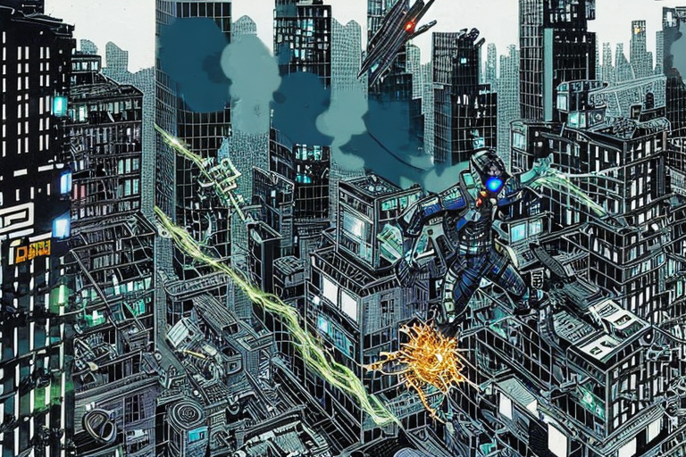

Ο χακέριος και οι ψηφιακοί αστυνομικοί
Αρχική Σελίδα
Πίνακας Περιεχομένων
Προστασία του εικονικού κόσμου

Στο βασίλειο των ψηφιακών κόσμων, όπου τα δυαδικά ψηφία και τα δεδομένα χορεύουν τρελά, υπήρχε μια ειδική φρουρά γνωστών ως Μονάδα Αστυνομίας Κυβερνοχώρου. Αυτοί οι ακούραστοι πολεμιστές της εποχής της πληροφορίας ενεδρούσαν στο πλάι της εθνικής οδού οπτικών ινών, επαγρυπνώντας στην καταδίωξη των κακοποιών του κυβερνοχώρου και των άθλιων χακέριων.
Ντυμένοι με συγχρονο εξοπλισμό υψηλής τεχνολογίας και οπλισμένοι με ένα οπλοστάσιο τσιπάκιων αιχμής, οι αστυνομικοί του κυβερνοχώρου εξέταζαν τον ατελείωτο χείμαρρο δεδομένων που έρρεε δίπλα τους σαν ένα μαγευτικό ποτάμι. Με τα μάτια τους διέτρεχαν τις οθόνες, αναζητώντας ανωμαλίες, απειλές όπως και την περιστασιακώς δημοφιλή εικονοσειρά με γάτες.
Αλλά ιδού! Ένα εκτυφλωτικό φως γέμισε το σκοτάδι, και έσχιζε το φάσμα του ψηφιακού χωροχρόνου. Ήταν ένα θέαμα πρωτόγνωρο, μια παλλόμενη, αστραφτερή σφαίρα ενέργειας εκτινάσσεται με αστραπιαία ταχύτητα κατά μήκος του αυτοκινητόδρομου πληροφοριών.
Εν ριπή οφθαλμού, η αστυνομία του κυβερνοχώρου αναπήδησε, με τις καρδιές τους να χτυπούν δυνατά με ενθουσιασμό και καφεϊνογενές άγχος. Με μια επιδεξιότητα που γεννήθηκε από αμέτρητες ώρες προπόνησης και μια στάλα απο τρεμούλιασμα καφεΐνης, ενεργοποίησαν τον υπερσύγχρονο εξοπλισμό τους, αποφασισμένοι να εντοπίσουν τον μυστηριώδη φωτεινό παρεμβαλλόμενο.
Καθώς ερευνούσαν βαθύτερα τα δαιδαλώδη μονοπάτια του ψηφιακού κόσμου, οι αστυνομικοί άρχισαν να αισθάνονται ότι κάτι κακό έρεε σε αυτόν τον τόπο. Είχαν να κάνουν με έναν χακέριο ανόμοιο όποιου άλλου, ένα πλάσμα που γεννήθηκε από αγνή κακία, έναν ψηφιακό δαίμονα που τροφοδοτείται από μια ακόρεστη δίψα για χάος και καταστροφή. Τα εύστροφα δάχτυλά του χόρευαν πάνω στα πλήκτρα του πληκτρολογίου του υπολογιστή του, προκαλώντας χάος με κάθε πάτημα.
“Κόκκινος συναγερμός! Κόκκινος συναγερμός!” αναφώνησε ο αστυνομικός Δυαδοκέφαλος, με τα μάτια του ανοιχτά διάπλατα από ένα μείγμα δέους και πανικού. “Δεχόμαστε επίθεση απο έναν αδίστακτο χειριστή. Κλειδώστε τον κεντρικό υπολογιστή! Ενεργοποιήστε το τείχος προστασίας! Υπερθερμαίνονται οι μητρικές πλάκες!”
Με έναν συγχρονισμό από φρενήρεις πληκτρολογήσεις, η αστυνομία του κυβερνοχώρου ξεκίνησε με την εικονική καταδίωξη, κυνηγώντας τη φευγαλέα δέσμη φωτός μέσα από έναν λαβύρινθο από τείχη προστασίας, κωδικούς κρυπτογράφησης και πίνακες μηνυμάτων γεμάτους απο μιμήδια. Η καταδίωξή τους οδήγησε από τις πιο σκοτεινές γωνιές του στα ύψη των σύννεφων δεδομένων, όλα σε αναζήτηση της αιθέριας αυτής ψηφιακής οντότητας.
Εν τω μεταξύ, ο χακέριος απολάμβανε τη δύναμή του, το κακόβουλο γέλιο του αντηχούσε στον εικονικό αιθέρα. Αψήφησε τα τείχη προστασίας με ένα χαμόγελο και χόρευε μέσα από κρυπτογραφημένες πύλες με απαράμιλλο θράσος. Οι αστυνομικοί του κυβερνοχώρου μπορούσαν να αισθανθούν το βάρος της αποστολής τους, γιατί αυτός ο αντίπαλος δεν ήταν ένας συνηθισμένος χακέριος, ήταν ένας ψηφιακός γελωτοποιός, ένας εικονικός Αριστοφάνης της καταστροφής και του χάους.
Τον ακολουθούσαν μετά πολλών στριφογυρισμάτων, μια άγρια καταδίωξη μέσα από μια αίθουσα με ψηφιακούς καθρέφτες, όπου η πραγματικότητα παραμορφωνόταν κάθε δευτερόλεπτο. Η αστυνομία του κυβερνοχώρου ταλαιπωρούταν να ανταποκριθεί, τα δάχτυλά τους άγαρμπα στις κρίσιμες πηγές, το μυαλό τους έτρεχε να παγιδεύσει τα άπιαστα κλειδιά. Ήταν αποφασισμένοι να εκθέσουν αυτόν τον ψηφιακό γελωτοποιό, να τον φέρουν στη δικαιοσύνη και να αποκαταστήσουν την τάξη στην εικονική σφαίρα.
Αλλά καθώς επικέντρωσαν τον στόχο τους, συνειδητοποίησαν ότι το παιχνίδι του χακέριου μόλις τώρα άρχιζε. Σημάδευαν έναν στόχο που θα μπορούσε να ξετυλίξει τον ίδιο τον ιστό του ψηφιακού κόσμου. Με ένα τελευταίο πάτημα πλήκτρου, ο χακέριος εξαπέλυσε έναν ψηφιακό κατακλυσμό, ένα παλιρροϊκό κύμα κακόβουλου λογισμικού και ιών που απείλησε να βυθίσει την λεωφόρο πληροφοριών στο χάος.
Μπροστά σε αυτήν την επικείμενη καταστροφή, η αστυνομία του κυβερνοχώρου στάθηκε σταθερή, με την αποφασιστικότητά της αμείλικτη. “Κρατήστε γραμμή! Κλείστε τους διακομιστές! Δεν θα παραπέσουμε!” φώναξε ο εντολοδόχος Δικτυοθραύστης, με τη φωνή του να κουβαλάει το βάρος χιλίων διακομιστών.
Με έναν συνδυασμό καθαρής δύναμης θέλησης, έξυπνης κωδικοποίησης και μιας υγιούς δόσης τύχης, η αστυνομία του κυβερνοχώρου κατάφερε να ματαιώσει το κακόβουλο σχέδιο του χακέριου.
Στο καταφύγιο του χακέριου

Ο χακέριος ήταν πράγματι ένα πλάσμα του βαθέους σκότους, κάτοικος εκείνων των σκιερών γωνιών του διαδικτύου όπου λίγοι αποτόλμησαν να επισκεφθούν και ακόμα λιγότεροι επέστρεψαν. Κατοικούσε σε ένα βασίλειο όπου ο δυαδικός κώδικας κυριαρχεί και οι νόμοι της φυσικής καταργούνται. Εδώ, τα όρια μεταξύ πραγματικότητας και μυθοπλασίας θολώνουν και τίποτα δεν είναι όπως φαίνεται.
Οι αστυνομικοί του κυβερνοχώρου προετοιμάστηκαν για την τελική αναμέτρηση, με τα νεύρα τους τσαντάλια. Μέσα στο ιερό τόπο του χακέριου, οι τοίχοι έβριθαν με δυσλειτουργίες λογισμικού και ιούς, το κάθε τι περίμενε να τους παγιδεύσει και να καταβροχθίσει οποιονδήποτε τόσο ανόητο για να πατήσει εδώ. Οι αστυνομικοί πλησίαζαν προσεκτικά, με μάτια ορθάνοιχτα απο το δέος και τον τρόμο. Ακόμη και οι μαύρες τρύπες του σύμπαντος, αυτοί οι ουράνιοι φύλακες του αιώνιου σκότους, θα το σκεφτόντουσαν διπλά προτού τολμήσουν να χωθούν σε αυτό το σκοτεινό βασίλειο.
Ο αστυνομικός Πύρτοιχος, ένας έμπειρος τεχνικός του κυβερνοχώρου με ταλέντο στο σπάσιμο κωδικών και με γεύση στην αρχαία σοφία, αναδείχθηκε ως ηγέτης αυτής της τολμηρής αποστολής. Ντυμένος με μια μαύρη καμπαρντίνα, και τα γυαλιά ηλίου του να αντανακλούν το ψηφιακό χάος γύρω του, προχώρησε με έναν αέρα σκοπιμότητας και βαρύτητας.
“Καλώς ήρθατε στην Άβυσσο του Δυαδικού”, είπε ο Πύρτοιχος, με τη φωνή του βαθιά και ηχηρή. “Σε αυτό το βασίλειο των αινιγματικών μηδενικών και μονάδων, ακόμη και οι ισχυρότεροι αλγόριθμοι τρέμουν από φόβο!”
Με μια κίνηση του καρπού του, ο αστυνομικός Πύρτοιχος δημιούργησε ένα ολογραφικό διάγραμμα που επέπλεε στον αέρα, απεικονίζοντας τα περίπλοκα μονοπάτια της ψηφιακής φωλιάς του χακέριου. Το διάγραμμα έλαμψε ως μια μαγευτική απεικόνιση με λαμπερά σύμβολα και γραμμές κώδικα.
“Ο δρόμος είναι ύπουλος φίλοι μου”, συνέχισε ο αστυνομικός Πύρτοιχος, με φωνή που κουβαλάει το βάρος αιώνιων ψηφιακών μαχών. “Αλλά με πονηριά και δημιουργικότητα, θα πλοηγηθούμε σε αυτούς τους σκοτεινούς διαδρόμους, όπως ο Οδυσσέας όταν χαρτογραφούσε τα δόλια νερά της Στύγας!”
Οι αστυνομικοί του κυβερνοχώρου αντάλλαξαν ματιές, η αποφασιστικότητά τους ανανεώθηκε από την ποιητική ενθάρρυνση του Πύρτοιχου. Είχαν γίνει μια εκλεκτή ομάδα ψηφιακών εξερευνητών, που έμπαιναν σε ένα βασίλειο όπου οι μονάδες και τα μηδενικά κινούταν ανεξέλεγκτα και τα τείχη προστασίας έτρεμαν από φόβο.
Σε κάθε δωμάτιο, αντιμετώπισαν δούρειους ίππους που εκπνέουν φωτιά και γρίφους από κακόβουλα ρομπότια, αλλά με κάθε εμπόδιο, γίνονταν πιο δυνατοί. Τα σπαθιά τους στον κυβερνοχώρο ακονίστηκαν από την εμπειρία. Προκάλεσαν τη σοφία του Σωκράτη, καθώς συλλογίζονταν τη φύση της πραγματικότητας μέσα στον καταρράκτη κώδικα, και συζήτησαν τις φιλοσοφίες του Ηράκλειτου ενώ απέφευγαν τα κακόβουλα πακέτα δεδομένων.
Τελικά, στην πιο σκοτεινή γωνιά αυτού του ψηφιακού υποκόσμου, έπεσαν πάνω στα άδυτα του χακέριου. Ήταν ένας τόπος ακατέργαστης δύναμης, όπου οι τοίχοι έλαμπαν από νέονους αλγόριθμους και αρχαιοελληνικές τοιχογραφίες. Ο χακέριος, ένα πλάσμα με ύπουλη ευφυία, κάθισε σε έναν θρόνο φτιαγμένο από μπερδεμένα καλώδια και οθόνες που τρεμοπαίζουν, με τα μάτια του να φλέγονται από μια τρελή λάμψη καθαρής, χαοτικής ιδιοφυΐας.
Ο αστυνομικός Πύρτοιχος προχώρησε, η φωνή του διέκοψε την τεταμένη σιωπή. “Χακέριε! Η κυριαρχία της ψηφιακής σου αταξίας τελειώνει εδώ! Ο χρόνος σου τελείωσε και η σφαίρα του κυβερνοχώρου θα γνωρίσει ξανά την ειρήνη!”
Ο χακέριος γέλασε, ένας ήχος που αντηχούσε στον εικονικό αέρα, ανακατεύοντας με τους απόκοσμους ψίθυρους ξεχασμένων αλγορίθμων. “Ηλίθιοι! Νομίζετε ότι μπορείτε να με νικήσετε; Είμαι η ενσάρκωση του χάους, ο προάγγελος της ψηφιακής επανάστασης! Δεν είστε παρά πιόνια στη μεγάλη μου συμφωνία της καταστροφής!”
Αλλά ο Πύρτοιχος αδιαφόρησε. Με ένα αμήχανο χαμόγελο, απάντησε: “Χακέριε, μπορεί να είσαι ο μαέστρος του χάους, αλλά εμείς είμαστε οι οργανοπαίχτες της επαγρύπνησης! Η συμφωνία της καταστροφής σου θα πνιγεί από τις αρμονικές χορδές της δικαιοσύνης!”
Με αυτό, οι αστυνομικοί του κυβερνοχώρου εξαπέλυσαν έναν χείμαρρο κωδικών, μια επίθεση από μηδέν και ένα και έπλεκαν όλα μαζί έναν μεγαλειώδη πίνακα τάξης και ακρίβειας. Οι άμυνες του χακέριου κατέρρευσαν, το κακόβουλο γέλιο του σίγησε από τη νικηφόρα κακοφωνία των ορθών αλγορίθμων.
Η απόδραση του χακέριου

Καθώς η εικονική σκόνη κατακάθισε, ο χακέριος βρισκόταν νικημένος, με την ψηφιακή του αυτοκρατορία σε ερείπια. Χωρίς να έχει πουθενά να τρέξει, ο χακέριος έκανε μια απεγνωσμένη προσπάθεια για ελευθερία, πηδώντας μέσα στα ακουστικά εικονικής πραγματικότητας τη στιγμή που οι αστυνομικοί του κυβερνοχώρου εισέβαλαν στο κρησφύγετό του. Σε μια λάμψη φωτός, εξαφανίστηκε από τα μάτια τους, αφήνοντας πίσω μόνο σκόνη και συντρίμμια.
Οι αστυνομικοί δεν ήταν έτοιμοι για τέτοια κόλπα. Καθώς ο χακέριος εξαφανίστηκε στα βάθη της εικονικής σφαίρας, οι αστυνομικοί του κυβερνοχώρου έμειναν σαστισμένοι με δέος, και τα σαγόνια τους κρέμοταν από δυσπιστία. Ήταν σαν να τους έπαιξε το σύμπαν μια κοσμική φάρσα, αφήνοντάς τους να κυνηγούν εικονικές οπτασίες και να μουρμουρίζουν με δυσπιστία.
Ο αστυνομικός Γιγάδυος, ένας μάγος τεχνολογίας, έξυσε το κεφάλι του και σκέφτηκε: “Λοιπόν, αυτή δεν είναι μόνο η ιστορία της ζωής μας; Κυνηγάμε σκιές, σκοντάφτουμε πάνω στα δικά μας ψηφιακά πόδια και καταλήγουμε ως ένα έργο του Αριστοφάνη, αλλά με περισσότερα σφάλματα λογισμικού και λιγότερο κρασί.”
Οι αστυνομικοί ανασυντάχθηκαν, αποφασισμένοι να μην αφήσουν το θήραμά τους να ξεγλιστρήσει στην άβυσσο του διαδικτύου. Με ανανεωμένη αποφασιστικότητα και, φόρεσαν τις συσκευές εικονικές πραγματικότητας, και βυθίστηκαν σε έναν κόσμο όπου οι νόμοι της φυσικής ήταν πιο ευέλικτοι και απ’τα ήθη ενός πολιτικού.
Καθώς διέσχιζαν τα ψηφιακά τοπία, οι αστυνομικοί του κυβερνοχώρου αντιμετώπισαν κάθε είδους ψηφιακές ψευδαισθήσεις. Ελικοπτεράκια σε απόχρωση νέοντος βούιζαν τριγύρω σαν αδιάκριτοι φωτογράφοι, και απεθανάτιζαν κάθε στιγμή της καταδίωξής τους. Κακόβουλα ρομπότια καραδοκούσαν στις σκιές, έτοιμα να ξεσπάσουν σαν καιροσκόποι κωμικοί, οπλισμένα με εντολές χάους και αταξίας.
Αλλά ο χακέριος δεν ήταν ανόητος. Είχε συγκεντρώσει μια λεγεώνα ψηφιακών συμμάχων, ο καθένας πιο εκκεντρικός και απρόβλεπτος από τον άλλο και διαμόρφωσαν ένα εικονικό κοινωνικό γράφημα που συναγωνιζόταν στην μπερδεμένη πλοκή ένα θεατρικό του Αριστοφάνη. Ο χακέριος περιηγήθηκε σε αυτόν τον περίπλοκο ιστό συνδέσεων με απαλά βήματα, περνώντας μέσα από κρυφές πύλες και κρυπτογραφημένα μονοπάτια σαν μάγος.
Εν τω μεταξύ, οι αστυνομικοί σκόνταφταν και περνούσαν μέσα από αυτόν τον εικονικό λαβύρινθο, με τις ενέργειές τους μια σειρά από κοσμικές πλάκες που θα έκαναν ακόμη και τους θεούς της κωμωδίας να γελάσουν. Βρήκαν τον εαυτό τους να ξύνουν τα κεφάλια τους, οι προσπάθειές τους να αποκρυπτογραφήσουν τις ψηφιακές γελοιότητες του χακέριου κατέληξαν μόνο σε εικονικά εμπόδια και μεταφυσικά χτύπηματα.
Και έτσι ο χακέριος έφτασε στον προορισμό του, μια πόλη φωλιασμένη βαθιά μέσα στην καρδιά του διαδικτύου. Ήταν ένα μέρος πέρα από κάθε νόμιμη κοινωνική γραφική παράσταση, όπου κυριαρχούσε ο παραλογισμός της ανθρώπινης φύσης και οι ιδιοτροπίες της τεχνολογίας.
Εδώ, οι κουκκίδες μεταμορφώνονται σε εικονοστοιχεία και οι εικονικές ταυτότητες χόρευαν σαν μαριονέτες σε μια ψηφιακή σκηνή. Με ένα χαμόγελο στο πρόσωπό του και μια λάμψη στα μάτια του, ο χακέριος εγκαταστάθηκε στο νεοανακαλυφθέν καταφύγιό του, περιτριγυρισμένος από αταίριαστους και ψηφιακούς αποστάτες. Τον υποδέχτηκαν με ανοιχτές αγκάλες, το εικονικό τους γέλιο αντηχούσε στον κυβερνοχώρο σαν απόηχος του ίδιου του Αριστοφάνη.
“Καλώς όρισες, φίλε μου”, είπε ο εκκεντρικός δήμαρχος της πόλης, μια εικονική ενσάρκωση του κυνισμού. “ Διέσχισες το μεγάλο τείχος του διαδικτύου και εισήλθες σε μια σφαίρα όπου η πραγματικότητα είναι προαιρετική και οι ατάκες συνοδεύονται με μία γενναία δόση υπαρξιακής κρίσης. Απόλαυσε τη διαμονή σου, γιατί εδώ, βρίσκουμε παρηγοριά στον παραλογισμό όλων αυτών.”
Και έτσι, καθώς οι αστυνομικοί του κυβερνοχώρου φούσκωναν και ξεφούσκωναν, προσπαθώντας να πάρουν ανάσα και να κατανοήσουν την ψηφιακή τρέλα, ο χακέριος εγκαταστάθηκε στο εικονικό του καταφύγιο.
Ψηφιακά ακροβατικά
Ακολουθώντας πιστά τα ίχνη του χακέριου, αναβατώντας πάνω στις έμπιστες στρουθοκαμήλους τους, οι αστυνομικοί του κυβερνοχώρου έφτασαν στη βάση των πανύψηλων τοίχων των κοινωνικών γραφημάτων. Αυτά τα τείχη, τόσο τρομερά όσο το Σινικό Τείχος της Κίνας και τόσο ανεξιχνίαστα όσο τα μυστήρια του σύμπαντος, ξεπροβαλλαν έμπροσθέν τους σαν ένα κολοσσιαίο κωλοδάχτυλο στις προσπάθειές τους.
Ο αστυνομικός Μεγαψήφιος, ένας ανίκητος πολεμιστής στον κυβερνοχώρο με εμφανή τάση για θεωρίες συνωμοσίας, περιέγραψε τους τοίχους με έναν ελαφρύ εκνευρισμό. “Ξέρετε”, μουρμούρισε στους συναδέλφους του, “αυτά τα τείχη των κοινωνικών γραφημάτων είναι σαν τις οδικές λωρίδες της ψηφιακής σφαίρας. Υπάρχουν μόνο για να μας κάνουν να αμφισβητήσουμε τη λογική μας και να αναρωτηθούμε το νόημα της ύπαρξης μας”.
Απτόητοι, οι αστυνομικοί του κυβερνοχώρου επινόησαν ένα σχέδιο για να ξεπεράσουν τα φαινομενικά ανυπέρβλητα τείχη. Κοίταξαν τριγύρω, για οτιδήποτε θα μπορούσε να τους ωθήσει σε νέα ύψη, μία αυτοσχέδια σκάλα ή μήπως έναν καταπέλτη.
Και τότε, ένα μία φαεινή ιδέα ήρθε στον Πύρτοιχο, ο οποίος είχε τη συνήθεια να λύνει προβλήματα με αμίμητη ευφυΐα και αλλοπρόσαλη λογική. Εντόπισε ένα κοπάδι από καμηλοπαρδάλεις να βόσκουν εκεί κοντά, με τον επιμήκη λαιμό τους να φτάνει στον ουρανό σαν καλώδια διαδικτύου που λαχταρούν για σύνδεση. Χωρίς να διστάσει στιγμή, απευθύνθηκε στους συντρόφους του: “Μαζευτείτε τριγύρω. Θα ξεκινήσουμε την πιο παράλογη πράξη τσίρκου από τότε που ο Αριστοφάνης έγραψε τα κωμικά αριστουργήματά του”.
Οι αστυνομικοί του κυβερνοχώρου επιβιβάστηκαν στις καμηλοπαρδάλεις και ισορροπούσαν επισφαλώς στις ταλαντευόμενες πλάτες τους καθώς τα ζώα σήκωναν τα κεφάλια τους προς τον ουρανό. Με κάθε βήμα, οι αστυνομικοί ανέβαιναν ψηλότερα, με την αποφασιστικότητά τους να συγκρίνεται μόνο με το άχαρο θέαμα που είχαν γίνει.
Αλλά δεν ήταν αρκετό. Οι τοίχοι του κοινωνικού γραφήματος απλώνονταν απίστευτα ψηλά, τα ύψη τους ομοίαζαν να αψηφούν τις προσπάθειες των αστυνομικών του κυβερνοχώρου. Οι αστυνομικοί χρειάζονταν κάτι περισσότερο. Χρειάζονταν έναν σύμμαχο ικανό να φτάσει στο ανέφικτο.
Και έτσι, έβαλαν στο μάτι τους πανίσχυρους ελέφαντες, τα κολοσσιαία αυτά όντα με μια ομορφιά αταίριαστη του επιβλητικού όγκου τους. Με την ευελιξία ακροβατών οι αστυνομικοί του κυβερνοχώρου πήδηξαν από καμηλοπάρδαλη σε ελέφαντα, κλιμακώνοντας τα ιλιγγιώδη ύψη των τοίχων του κοινωνικού γραφήματος με έναν συνδυασμό τύχης και καθαρού θράσους.
Καθώς ανέβαιναν, αποφεύγοντας τους αλγόριθμους των μέσων κοινωνικής δικτύωσης και τα συστήματα φήμης που γάβγιζαν σαν λυσσασμένα σκυλιά, οι αστυνομικοί του κυβερνοχώρου δεν μπορούσαν παρά να γελάσουν με την απόλυτη τρέλα της κατάστασής τους. “Ξέρετε”, είπε ειρωνικά ο αστυνομικός Μεγαψήφιος, “είμαστε σαν ένα σωρό ψηφιακούς φύλακες του ζωολογικού κήπου, που κάνουν ακροβατικά σε καμηλοπαρδάλεις και ελέφαντες, όλα στο όνομα της καταδίωξης ενός ύπουλου χακέριου.”
Τελικά, οι αστυνομικοί του κυβερνοχώρου έφτασαν στην κορυφή των τοίχων των κοινωνικών γραφημάτων, με την ανάσα τους κομμένη και οι ελέφαντές τους κοιτούσαν με ένα μείγμα εξάντλησης και ταραχής. Από αυτό το οχυρό, αγνάντεψαν την εικονική πόλη, δελεαστικά κοντά αλλά απρόσιτη παρ’ όλ’ αυτά.
Ο Πύρτοιχος, με τη φωνή του χρωματισμένη με μια χροιά θαυμασμού και εξάντλησης, στράφηκε στους συναδέλφους του κυβερνοαστυνομικοί και δήλωσε: “Φτάσαμε εδώ, φίλοι μου. Έχουμε σκαρφαλώσει στα τείχη του παραλογισμού και έχουμε καβαλήσει πάνω σε πλάσματα προερχόμενα κατευθείαν από ένα ψυχεδελικό τσίρκο. Δεν θα μας σταματήσουν τώρα. Ο χακέριος μπορεί να βρήκε καταφύγιο σε αυτή την εικονική πόλη, αλλά δεν θα ησυχάσουμε μέχρι να τον φέρουμε στη δικαιοσύνη!”
Αναχωμένοι και ατίθασοι

Τα μάτια τους σάρωναν την τεράστια εικονική πόλη από κάτω, ένα ζωντανό τοπίο γεμάτο με εικονικούς πολίτες να ζούν την ψηφιακή τους ζωή. Αλλά η ευφορία τους ήταν βραχύβια καθώς παρατήρησαν μια ανησυχητική τάση, οι πόρτες σε αυτές τις εικονικές κοινότητες έκλειναν μια μία.
Ο Φιλομιμήδιος, ο ειδήμων των μέσων κοινωνικής δικτύωσης της ομάδας, έσμιξε τα φρύδια του και μουρμούρισε: “Λοιπόν, αυτό δεν αποτελεί έναν σὺγχρονο οιωνό της καταστροφής; Η κακή μας φήμη εξαπλώθηκε γρηγορότερα και από ένα δημοφιλές μιμήδιο, και τώρα έχουμε αποκλειστεί από την εικονική υπηκοότητα”.
Οι προσπάθειές τους να συλλάβουν τον χακέριο απέτυχαν, δημιουργώντας ένα ίχνος παράπλευρης ζημιωτικής φήμης που κατέστρεψε τη θέση τους σε πολλά κοινωνικά γραφήματα. Οι κάποτε σεβαστοί φύλακες της ψηφιακής σφαίρας είχαν γίνει ανεπιθύμητοι στον τομέα τους.
Ο Μεγαψήφιος, με ένα μείγμα απογοήτευσης και αυτοκαταστροφικού χιούμορ, θρηνούσε: “Είμαστε σαν τους βασιλιάδες και τις βασίλισσες της ακυρωμένης κουλτούρας, που απορρίπτονται από τις εικονικές κοινωνίες πιο γρήγορα από ό,τι μπορεί κάποιος να ψελλίσει ”ακύρωση συνδρομής“.
Χωρίς να πτοηθούν από την αμαυρωμένη φήμη τους, οι αστυνομικοί του κυβερνοχώρου έψαξαν τριγύρω για μια αχτίδα ελπίδας, ένα ψηφιακό καταφύγιο που θα τους καλωσόριζε παρά τα ψηφιακά εικονικά παθήματά τους. Σάρωσαν το εικονικό τοπίο, αναζητώντας απελπισμένα ένα μέρος που θα εκτιμούσε τις προσπάθειές τους να διατηρήσουν την τάξη στο χάος του κυβερνοχώρου.
Αλλά κάθε εικονική πόλη που πλησίαζαν τους κακοδέχοταν με ένα απαγορευτικό σήμα, με τους ψηφιακούς παλλικαράδες τους να κουνάνε το κεφάλι τους σε ένδειξη αποδοκιμασίας. Η φήμη τους προηγούταν σαν ένα ανεπιθύμητο αίτημα φιλίας και οι πόρτες της αποδοχής παρέμεναν σταθερά κλειστές.
Ο αστυνομικός Πύρτοιχος, ο αιώνιος αισιόδοξος της ομάδας, αναστέναξε και μουρμούρισε: “Φαίνεται ότι μας έχουν απαγορεύσει την πρόσβαση οι αλγόριθμοι της μοίρας. Αυτά τα κοινωνικά τείχη γραφημάτων προβάλλουν ανυπέρβλητα εμπόδια, αλλά δεν θα το αφήσουμε να μας σταματήσει. Βρείτε έναν τρόπο να λυτρωθείτε, να αποδείξουμε ότι είμαστε κάτι περισσότερο από μια συλλογή ψηφιακών σφαλμάτων και ντροπιαστικών δημοφιλών μιμιδίων”.
Και έτσι, οι αστυνομικοί του κυβερνοχώρου ξεκίνησαν μια νέα αποστολή, να ανακτήσουν τη φήμη τους και να αποκαταστήσουν τη θέση τους ανάμεσα στον εικονικό πληθυσμό. Αποτόλμησαν περιηγήσεις εν μέσω της ψηφιακής έρημου, διασχίζοντας εικονικές κοιλάδες και σκαλώνοντας εικονικά βουνά, αποφασισμένοι να βρουν το μοναδικό μέρος που θα τους έδινε μια ευκαιρία λύτρωσης.
Καθώς ταξίδευαν, συνάντησαν άλλους εικονικούς ανεπιθύμητους και απροσάρμοστους, εκείνους που είχαν πέσει θύματα της απρόβλεπτης φύσης του ψηφιακού χώρου. Μαζί, σχημάτισαν ένα ετερόκλητο πλήρωμα, μια συνομοσπονδία της κοινωνικής δικτύωσης με κοινή επιθυμία να ξαναγράψουν τις ψηφιακές τους αφηγήσεις.
Με το μοναδικό τους μείγμα εξυπνάδας εμπνευσμένη από τον Αριστοφάνη και γνώση των μέσων κοινωνικής δικτύωσης, οι αστυνομικοί του κυβερνοχώρου και οι νέοι σύμμαχοί τους ξεκίνησαν την εκστρατεία ανάκτησης της φήμης τους. Μετέτρεψαν τα λάθη τους σε μιμήδια, τις αποτυχίες τους σε προειδοποιητικές ιστορίες που ευνοήθηκαν απο τις διαδικτυακές μάζες.
Αργά αλλά σταθερά, η κοινή γνώμη άρχισε να αλλάζει. Οι εικονικοί πολίτες, κάποτε επιφυλακτικοί με τους αστυνομικούς του κυβερνοχώρου, αναγνώρισαν τις γνήσιες προσπάθειές τους να επανορθώσουν. Οι τοίχοι του αποκλεισμού άρχισαν να γκρεμίζονται και οι πόρτες για τις εικονικές κοινότητες άνοιξαν ξανά.
Ο Φιλομιμήδιος, χαμογελώντας διάπλατα, αναφώνησε: “Πρόκειται για μια επική ψηφιακη επιστροφή! Δεν είμαστε πια το αστείο της εικονικής κωμωδίας, είμαστε η γροθιά που προσγειώνεται με ένα βρυχηθμό γέλιου!”
Και έτσι, οι αστυνομικοί του κυβερνοχώρου, οπλισμένοι με αυτογνωσία, ταπεινοφροσύνη και μια υγιή δόση κωμικής έμπνευσης του Αριστοφάνη, ξαναβρήκαν τα ερείσματα τους στην ψηφιακή σφαίρα. Βγήκαν μπροστά, έτοιμοι να αντιμετωπίσουν τον χακέριο και να αποκαταστήσουν την τάξη στο χαοτικό τοπίο που κάποτε προστάτευαν.